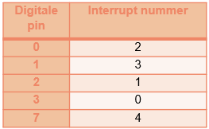

Een interrupt instellen is één regel code. Maar er zitten twee dingen in die je moet begrijpen, want als je ze verkeerd invult krijg je geen foutmelding en reageert je programma nooit.
attachInterrupt(digitalPinToInterrupt(knopPin), noodstopIngedrukt, FALLING);Er staan drie dingen tussen de haakjes:
| Onderdeel | Wat het is |
|---|---|
digitalPinToInterrupt(knopPin) |
Welke pin je in de gaten wil houden. Zie hieronder waarom je die functie eromheen zet. |
noodstopIngedrukt |
Welke functie er uitgevoerd moet worden. De naam kies je zelf. Let op, er staan geen haakjes achter. Je roept de functie hier niet op, je geeft ze door. |
FALLING |
Wanneer hij moet afgaan. Zie de tabel verderop. |
Dit is de belangrijkste beperking van het hele labo. Op een Arduino UNO kunnen maar twee pinnen een interrupt opwekken: pin 2 en pin 3. De rest van je pinnen kan het niet.
Zet je je knop op pin 7 en schrijf je attachInterrupt(digitalPinToInterrupt(7), ...), dan compileert dat probleemloos en uploadt het probleemloos. Je programma doet alleen nooit iets. digitalPinToInterrupt() geeft voor een pin die het niet kan de waarde NOT_AN_INTERRUPT terug, en attachInterrupt() negeert die stilzwijgend.
Reageert je interrupt niet, kijk dan altijd eerst na of je knop wel op pin 2 of pin 3 zit.
Voor andere borden ligt het anders. Dat is handig om te weten, al werk je voor dit labo met de UNO:
| Bord | Bruikbare pinnen |
|---|---|
| UNO, Nano, Mini, andere 328-borden | 2, 3 |
| Micro, Leonardo, andere 32u4-borden | 0, 1, 2, 3, 7 |
| Mega, Mega2560, MegaADK | 2, 3, 18, 19, 20, 21 |
| UNO WiFi Rev.2, Nano Every, Due, Zero | alle digitale pinnen (bij de Zero: alle behalve pin 4) |
De hardware in de chip werkt met interruptnummers in plaats van met pinnummers, en die twee zijn niet gelijk. Op een UNO hoort pin 2 bij interrupt 0, en pin 3 bij interrupt 1.
Je zou dus attachInterrupt(0, ...) kunnen schrijven als je een knop op pin 2 hebt. Doe dat niet. Die 0 zegt niets, en op een ander bord betekent hij iets anders. digitalPinToInterrupt() doet de omzetting voor jou:
const int knopPin = 2;
// Doe dit:
attachInterrupt(digitalPinToInterrupt(knopPin), mijnISR, FALLING);
// En niet dit, ook al werkt het op deze ene UNO:
attachInterrupt(0, mijnISR, FALLING);Verhuis je je knop naar pin 3, dan hoef je alleen knopPin aan te passen en klopt de rest vanzelf.
In de les heb je de tabel voor de Leonardo bekeken. Daar zijn er vijf interrupts, en de nummering is veel minder logisch:

Kijk eens naar pin 2 en pin 3. Op de UNO is pin 2 interrupt 0; op de Leonardo is pin 3 dat. Schrijf je een ruw nummer in je code, dan doet dezelfde sketch op het andere bord dus iets compleet anders, zonder waarschuwing. Daarom bestaat digitalPinToInterrupt().
Op een Leonardo zijn pin 2 en pin 3 net SDA en SCL, de twee draden van de I²C-bus. Op zo'n bord kan je die pinnen dus niet gebruiken voor een interrupt als je ook een PCF8574 aan het werk hebt. Op de UNO zit I²C op A4 en A5 en heb je dat probleem niet.
Het derde onderdeel zegt op welke verandering je wil reageren. Dat is het moment waarop de spanning van laag naar hoog gaat of omgekeerd, en dus niet het niveau zelf. Zo'n overgang heet een flank.
| Waarde | Gaat af wanneer | Gebruik je bij |
|---|---|---|
FALLING |
De pin gaat van HIGH naar LOW (dalende flank) | Een knop met INPUT_PULLUP: die is hoog in rust en wordt laag als je drukt. Dit is wat je in dit labo bijna altijd nodig hebt. |
RISING |
De pin gaat van LOW naar HIGH (stijgende flank) | Een knop met een externe pull-downweerstand, of een sensor die een puls omhoog geeft. |
CHANGE |
Bij allebei: elke verandering | Als je zowel het indrukken als het loslaten wil weten. Let op: je ISR gaat dan dus twee keer af per druk. |
Gebruik je pinMode(knopPin, INPUT_PULLUP), dan staat de pin hoog zolang je niets doet, en trekt de knop hem naar de massa als je drukt. De flank op het moment van indrukken is dus een dalende flank, en dat is FALLING.
Herlees zo nodig Pull up en pull down weerstanden.
Zet je pinMode() altijd voor je attachInterrupt():
const int knopPin = 2;
const int ledPin = 8;
void mijnISR()
{
digitalWrite(ledPin, HIGH);
}
void setup()
{
pinMode(ledPin, OUTPUT);
pinMode(knopPin, INPUT_PULLUP); // eerst dit
attachInterrupt(digitalPinToInterrupt(knopPin), mijnISR, FALLING); // dan pas dit
}
void loop()
{
}Doe je het omgekeerd, dan schakel je de pull-up pas in nadat de interrupt al luistert. Die pin springt daardoor van laag naar hoog, en dat is een flank die je zelf gemaakt hebt. Je ISR kan daardoor meteen bij het opstarten één keer afgaan zonder dat er iemand op de knop gedrukt heeft.
Wil je op een bepaald moment niet meer gestoord worden, dan maak je de koppeling weer los:
detachInterrupt(digitalPinToInterrupt(knopPin));Je hebt dit in dit labo niet nodig, maar het is handig om te weten dat het bestaat. Voor een noodstop wil je meestal juist het omgekeerde, namelijk dat hij altijd blijft luisteren.
loop() krijgt.